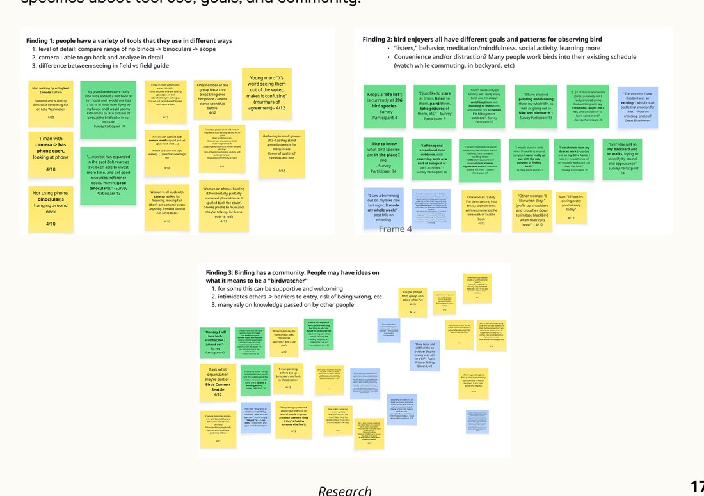
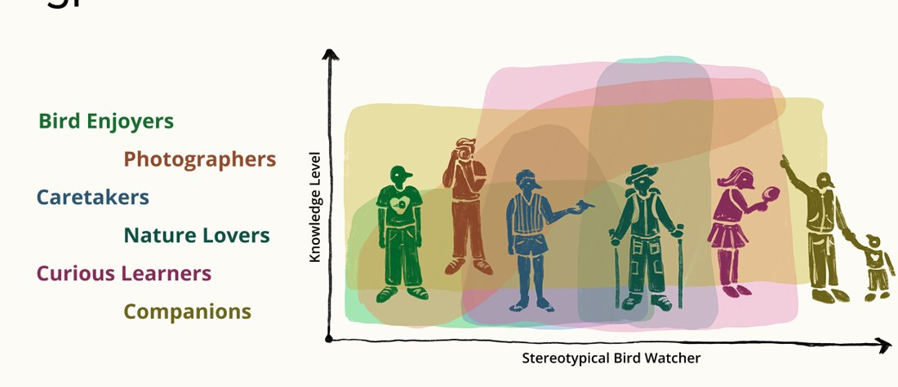
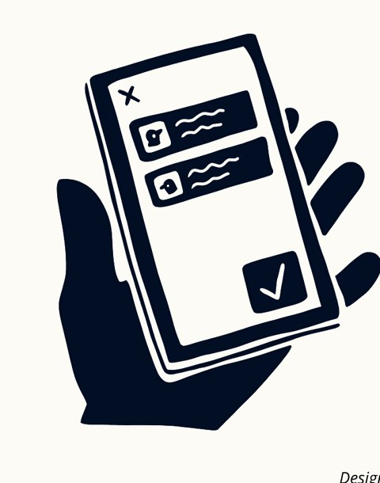
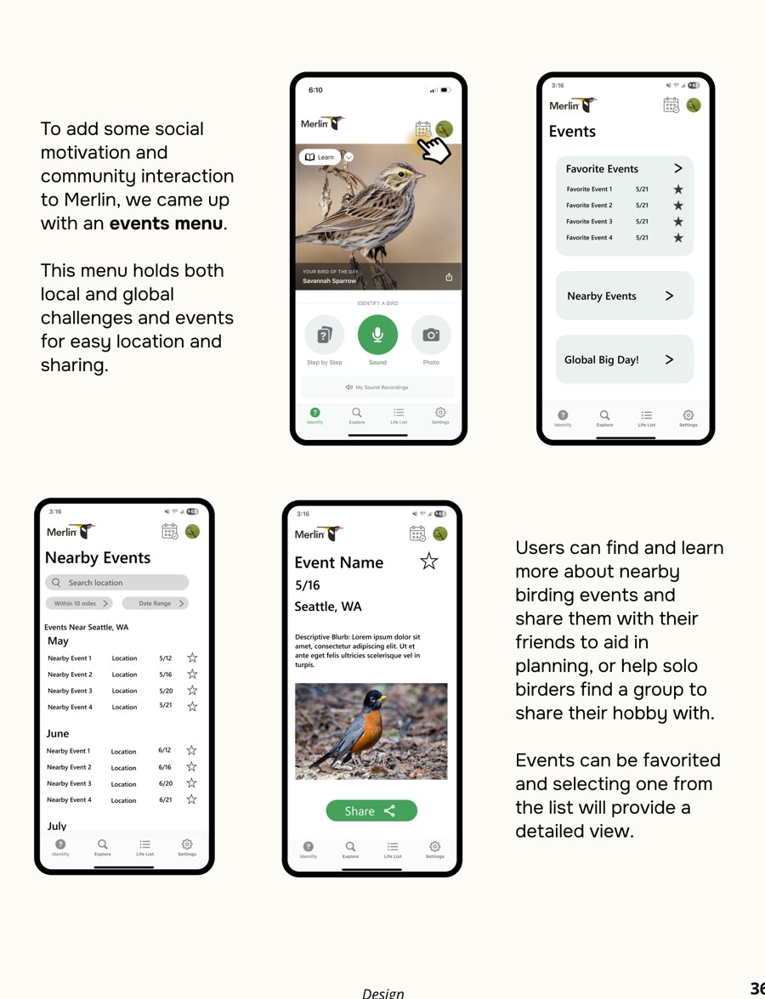
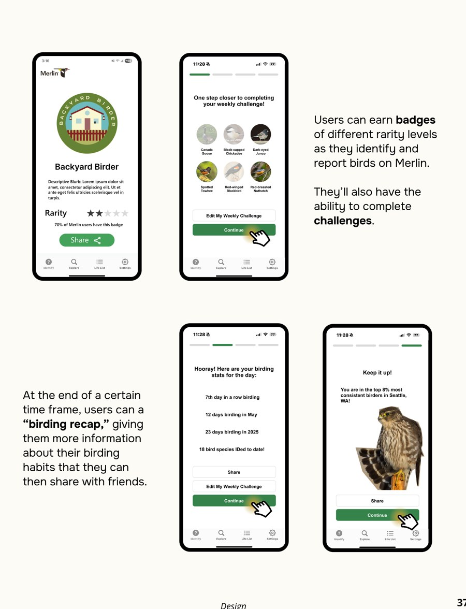
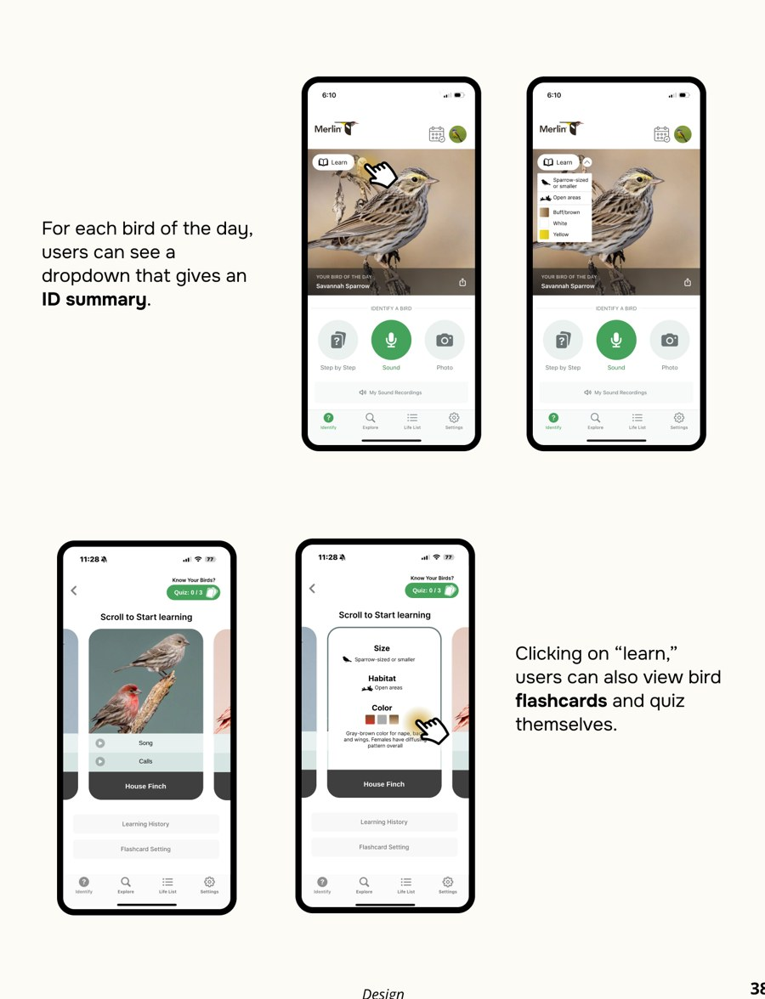
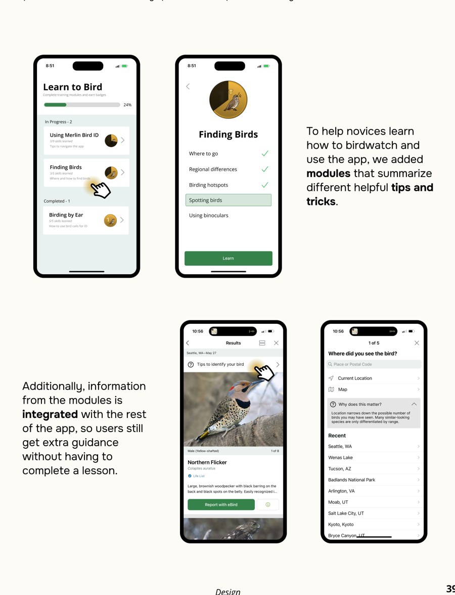
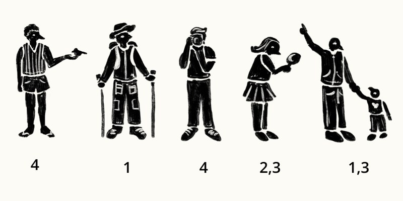
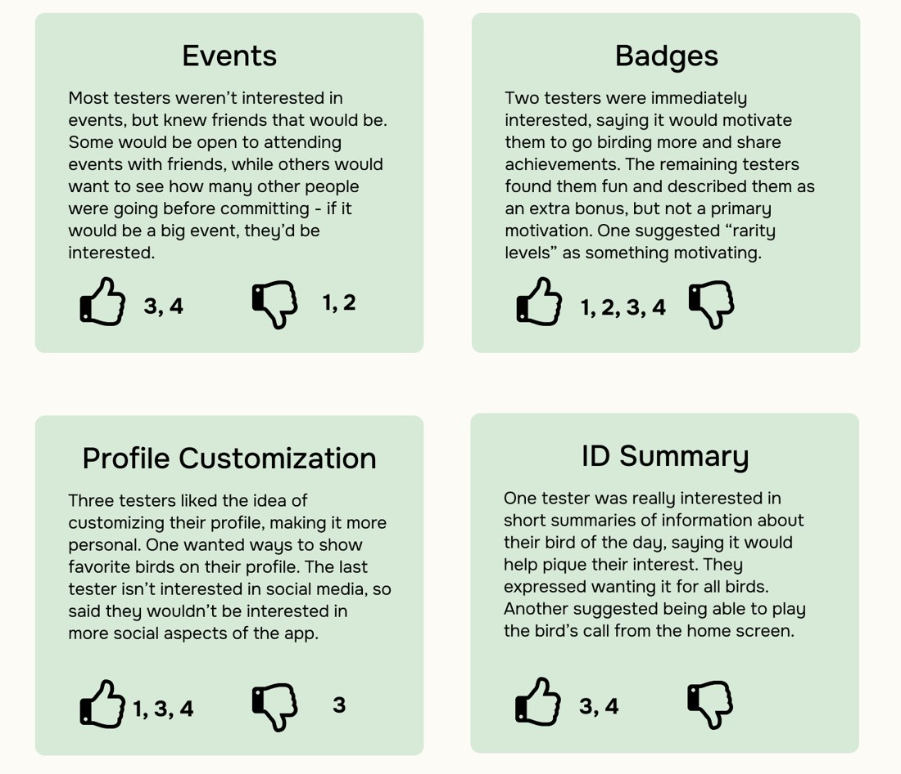
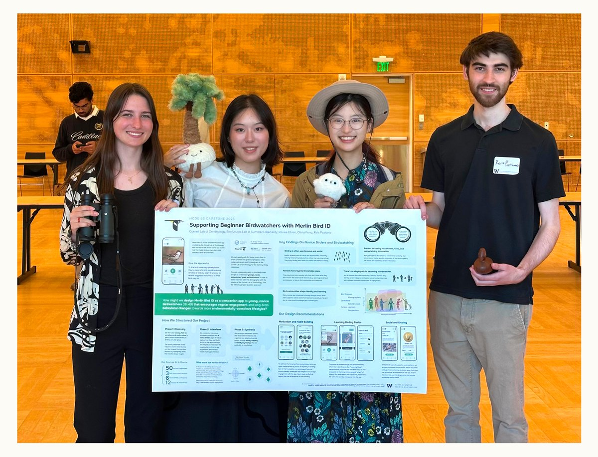

Led the research
Framed the learning agenda — motivations, barriers, identity, field behavior — and helped design the survey, field protocol, and interview guide.

An HCDE capstone with the Cornell Lab of Ornithology and the UW EcoFutures Design Lab. In a team of four, I led UX research and shared product management — studying young, novice birders, then shaping product directions Merlin could use to build confidence and lasting engagement.
UX Research Lead & rotating PM (team of 4)
Cornell Lab of Ornithology & UW EcoFutures Lab
Jan–Jun 2025
Survey, field study, interviews, synthesis, testing
Overview
Merlin helps millions identify birds — but the Cornell Lab wanted to reach young, novice birders (18–40) and learn what actually keeps them coming back.
How might Merlin become a companion for young novice birdwatchers, encouraging regular engagement and a more nature-connected life?
It was a research-led capstone: the deliverable wasn't a shipped feature, but a grounded picture of novice birders plus tested design directions the Merlin team could carry forward.
My Role
We rotated the PM role across four milestones, so each of us led once. My constant job was steering the research and keeping our design grounded in evidence.
Framed the learning agenda — motivations, barriers, identity, field behavior — and helped design the survey, field protocol, and interview guide.
Guided grounded-theory synthesis and connected sponsor goals, scope, and evidence into one story the team could defend.
Led weekly check-ins with Dr. Shana Hirsch and coordinated feedback from Cornell's designers to keep us unblocked.
Turned research into implications, then helped shape the four design directions we tested with users.
Research
Three phases — discovery, interviews, synthesis — grounded in how novices actually behave, not just how they use an app.
Discovery used surveys, field observation, and media review; interviews and shadowing with six novice birders added depth. In synthesis I guided transcript coding, thematic analysis, and affinity mapping.

Findings
Novices need support that matches their knowledge, tools, and social situation — and there's no single beginner. We mapped six novice types by their main goal.

Novices often notice birds in daily life, and enter birding through friends.
Different identities and motivations mean there's no one path from beginner to expert.
Time, tools, knowledge gaps, and overload all shape how confident a novice feels.
Some want encouragement; others fear getting IDs wrong in front of experts.
They may know birds casually but not know what they don't know yet.
ID isn't the end goal — it's one step in learning about a bird.
Implications
Before features, I turned the research into implications any Merlin concept for novices should respect.
Not everyone calls themselves a “birdwatcher.” Novices are easily overwhelmed and often bird spontaneously without tools — support should reduce overwhelm and meet people mid-moment.
Many enjoy learning in community where they can ask questions, yet fear being wrong in front of experts. Curiosity often extends beyond birds to nature at large.

Design Directions
We framed beginner support as an ongoing system across three areas — motivation, learning, and social sharing — then designed four concepts grounded in the research.

Lightweight events users can find, favorite, and share — community without a heavy social backend.

Rarity badges, weekly challenges, and shareable recaps to support motivation beyond identification.

ID summaries and self-testing flashcards that break information into smaller, calmer pieces.

A toggleable mode with embedded tips — for the parts of birding beyond ID, like finding birds.
Testing
Four rounds of testing, grouped by novice type — and every tester had a different favorite feature.
Rather than crowning one winner, that polarization became the point: it validated a flexible system where novices opt into the support that fits them.


Outcome
We gave Cornell a grounded definition of novice birders plus evidence-backed, user-tested design solutions — and presented it all at the HCDE capstone showcase.

Reflection
Leading research is less about collecting more data, and more about protecting the question.
With a broad prompt and an eager team, my job was to narrow scope — which questions actually move the design. Defining that early kept our synthesis sharp.
Our polarizing results could have felt like failure. Reading them as a finding — novices are plural — changed how I frame “inconclusive” results now.
Presenting weekly to Dr. Hirsch taught me to connect goals, scope, and evidence into one narrative a room can follow.
Leading once and being led in turn gave me real empathy for planning under deadline — and how to keep a team unblocked.